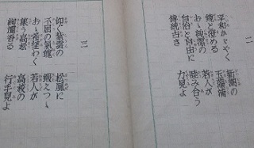
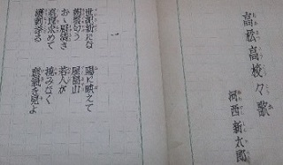

高松高校の校歌制定に生徒も積極的に関わる
高松高校と県女は昭和24年4月に統合されましたが、その後もそれぞれの校歌が存続し、校歌が2つある状態でした。そのため、新校歌の制定は生徒にとっても大きな関心事でした。
当時の高高新聞によれば、生徒も、校歌選定を学校に任せるのではなく、校歌制定委員会を設置して積極的に活動したことが窺われます。
ただ、生徒から適当な作品の応募がなかったため、作詞は高中34回卒業の河西新太郎氏に依頼し、作曲は、元本校音楽教師の安藤邦夫氏を通じて、当時26歳で新進気鋭の芥川也寸志氏に依頼して、昭和26年12月17日、現在の高松高校校歌が制定されました。
下の写真は河西氏の歌詞原稿です。（玉翠会館所収 現在の校歌と詞が違うので、推敲前の原稿と思われます。）


校歌制定に係わられた葉原先生は、「今回の新校歌制定の特色は、生徒の自主性に重点が置かれたこと」と述べられています。
以下、校歌制定当時の様子を、高高新聞から追ってみます。
校歌制定の氣運昂まる
精神なるロマンチシズムを
（昭和25年4月22日付高高新聞より）
統合以来学園の最も大きい関心事であつた新校歌制定の問題が自治会に依つて取上げられ、昨年末初めての審議があつた後、自治会福祉委員会は交友会文藝部と交渉協力し、学校当局とも連絡を重ね、学園に於ける新校歌制定の氣運は漸く熟して、校歌制定委員会が設立されたが、次の事業は新学期開始と共に愈々正式に発足することゝなつた。（中略）
此の事業に当つて感じられる最大の困難は、校歌というものが単に委員会のみの熱意に依って生み出されるべき性質のものではなく、それが、少くとも全校校友諸君の湧き上がる熱意に依るべきものであるということに、―つまり、新校歌を制定するということは、直接に、新なる校風を興す、という問題につながることにある。然も歌はるべく充分に節操ある歌が、現在我々の校風に於て性格的になつているか否かは、交友諸君の心ある反省に映されていることであつて、此の点に関し、委員会では、現在在る姿に於いての校風の裡から生まれるもの、というよりは、将来到るべき理想の姿に於ける校風の裡から生まれるものこそを新校歌に期待している。
青年の社会集団には殆ど本質的であるべきものであつて、然も本学園の現在迄の校歌に欠如していたものに清新なるロマンチシズムとも云はるべきもの―そのロマンチシズムは単なる若さへの感傷丈ではなく、眞理感の体得を求めて生身を喬る如き氣位ある武士のロマンチシズムでもあるが―を明らかに推薦することが出来る。骨体に哲して深く真理を愛する心から何処となく放たれる香り高い匂ひが我々の校歌であることが望まれる。
土俗的封建性に固執した在来の校歌の類ではなく、我々の新校歌が普遍的な人間感情に生まれるべきものであることも、又当然に期待されている。（後略）
校歌制定委員に先生も一役
（昭和26年9月22日 高高新聞より）
全校生徒待望の校歌制定問題は愈々二学期より、学校側と自治委員会とで活発な運動が行われる事になつた。九月七日、自治会室にて学校側と三年生有志、自治委員の間で、校歌を制定するに当たつての懇談会が開かれた。（中略）
懇談会では、これから先一年間は継続して行ける制定委員会が必要であるとの意見があり、全員これに同意した。
次に制定の具体策について検討したところ、詩人に依頼、先輩・生徒から募集した方が良いと意見百出。結局全ての案を実施する事に決定した。
募集は一旦十月十五日で締切り、校友の歌として優秀作があれば、それを校歌とする事に決定。校歌発表は出来れば十一月の文化祭に行われる。
次いで、十日の第二回自治委員会で、村尾校歌制定委員長より、先生及び三年生有志を加えた委員会を結成したいとの提案があり、討議の結果可決された。学校側からの委員は、大久保、草薙、秋山、葉原、倉岡の五先生である。
待望の校歌近く設定
（昭和26年12月3日 高高新聞より）
統合以来の懸案の一つになっていた校歌、校友会の歌は、去年の四月頃から先生側と生徒自治会側で制定委員会を定め、本格的な制定運動に乗り出したが、適当な作品が集まらず延び延びになっている間に現自治会が発足した。
新しく生徒側には村尾君を委員長とする校歌、校友会の歌制定員会を組織し、先生側と相談の結果、生徒側からだけの募集には従来の例からみても期待することが出来ないので、広く詩人、先輩、生徒の側から募集することにし、結局校歌は、先輩で詩人である河西新太郎の作に決定した。
作曲は、元本校音楽教師であった安藤邦夫氏を通じて、芥川也寸志、團伊玖磨、中田善直、黛敏郎の四氏の内の適当な一人を選んで頂く様、現在依頼中で、二学期中にはその発表会を開催する。
校友会の歌は、現在なお選考中で、まだ五、六篇しか集まっておらず、関係者側としては今後どしどし諸君の投稿を希望している。
諸君の意志で磨け 河西氏
気軽に歌える歌を 芥川氏
（昭和27年1月25日 高高新聞より）
昭和二十四年旧県立高松中学校と県立高松高等女学校とが県立高松高等学校に統合されてより最近まで、古い二つの校歌を校歌として用いていたが、第五代小野自治会長のスローガンとして校歌制定の問題を掲げ、九月二日村尾宗政君を委員長とし、三年生を含む十名の生徒、校長先生以下七名の諸先生方で校歌制定委員会が結成された。
その後、多難な道を歩み十二月十七日発表会に迄及んだのである。
校歌制定委員会結成後、早速生徒間から適当な詩を募集したが、一遍の応募作品もなく、校内での募集は一応打切り、先輩、詩人の中より候補者を列挙、検討の結果、高中第三十五回卒業の河西新太郎氏に依頼、氏よりの詩作四篇中より一篇を選び、作曲の方は本校音楽教官であった安藤邦夫氏を通じて芥川也寸志氏に依頼、現在の新校歌が出来上った。
ここに、その作詞作曲に直接当たられた河西新太郎氏、芥川也寸志氏及び教師側として直接関係した葉原先生の言葉を次に掲げる。
校歌断想
河西新太郎
（昭和27年1月25日 高高新聞より）
校歌の作詞者として感想を書けと云われたが、これには少なからず当惑する。なぜなら、校歌は私が作詞したものに相違ないが、既に私自身のものではなく、学校のものであり、学生諸君のものであるからだ。（中略）
唯、確信を以って断言できることは、懐しの母校、わが高松高校の校歌にベストを尽くしたということである。それで私の為すべきことは終ったのである。
そして、その後は、総べて眉若き諸君の肩にかゝっていることを知って欲しい。校歌を生かすも殺すも、清新溌溂たる若き学生諸君の気魄と熱情によるのである。
海底の岩盤にくっついた阿古屋貝の中へ、波が運び込んだ一粒の砂にー阿古屋貝はこの小さな侵入者たる一粒の砂に傷つき、必死の力で傷痕を癒そうとして血涙をふりしぼるのである。それが真珠質と呼ばれる分泌物なのだが、かくて蒼い海の底で、皎々たる真珠が成長しでゆくのである。
いわば、私の作詞した校歌は、無数にある海底の砂の一粒に過ぎない。この一粒の砂を、永久に一粒の砂として海流に浮遊させるか、それとも玲瓏たる白玉の真珠に変えるか、それは一つに諸君の意志するところによって分かれるのだ。
真に立派な校歌とするために、岩を噛む激浪にも揺がず、永い忍苦を秘めて、努力をつづけてゆく真珠貝であることを、私は諸君及び諸君のあとに続くものの上に信じたい。
私の希望
芥川也寸志
（昭和27年1月25日 高高新聞より）
今や音楽の世界はハイブロウとロウブロウにはっきりと分裂してしまって、町は希望のない虚無と感傷にみちた低俗な流行歌に支配され、音楽界は全く大衆とは無縁の極めて高級な音楽のみを採り上げています。
人類の平等が強く叫ばれるようになり、世界全体がその方向に向かっている時に、この様な全く反対の現象を私たちは体験しているのであります。これは嘗てナポレオンによって統一国歌の夢が持たれた時に、逆に強い民族主義の勃興をみたのと共通した皮肉極まる現象でありますが、このみたされないものへの償いとすることの可能な唯一の私達の持物こそスクウル・ソングなのであります。
日本では一つの学校にせいぜい校歌と応援歌位で、それも儀礼として、若しくは特定の場合のみにしかうたわれないものですが、私の言うスクウル・ソングとはそういうものではなくて、登校の時、昼休の時、家で遊ぶ時、いつどこでも気軽に口をついて出て来る種類のものでなくてはならないのです。
（中略）
スクウル・ソングは、もっと分かり易く言えば、学校の流行歌ということであります。健全な学校の流行歌を持つということがどうしても必要なのです。学校を出て社会に立った嘗ての人々も、楽しく多くの友達と声を合わせてうたったいくつかの歌は、自然に口から洩れて来るに違いありません。そういう明るい歌に世の中がだんだんにみたされてゆく夢を持ちたいのです。
私は学校音楽に対して、いつもこういう方向に向かって努力を積み重ねてゆきます。高松高校にもやがてはそういう希望と悦びにあふれたいくつかの歌にみたされる愉快な日が訪れることを遥かに祈り続けましょう。
校歌制定に寄せて
葉原幸男
（昭和27年1月25日 高高新聞より）
漸くではあったが、とにかく、新校歌が制定せられてよろこばしい。今回の校歌は、学校長の独断で制定して天下り式に其れを生徒に与えるという遣り方ではなく、生徒の自主的な動きに依って作るという遣り方にした。と発表会で校長さんが云われた。その通りであって、今回の新校歌制定事業の特色は、その精神と運営の方法に於いて、生徒の自主性に重点が置かれたことだと思う。
（中略）
新校歌は諸君が生んだのだ。浅かれ、深かれ、諸君は伝統を超え、伝統の主人になったのだと。
だが未だ真にではない。そこが悲しい。だから僕は諸君が真に伝統の主人になるべきであると云い直す。新校歌はよかれあしかれ諸君が主人であるから、そこを真の意味で主人となり、永遠に、常に、進行を生みだす清新な主になって欲しい。
以上新校歌制定に当った一員として、愚感の一端を誌す。
呻 吟
（昭和27年1月25日 高高新聞より）
新校歌を聴く。（中略）全体として感じのよい曲である。
近傍に先輩詩人の居た事はもっけの幸いだったし、理論とクラシックの上にデンとおさまり返った老大家でなく、二十代の新進作曲家に依頼したのも、まず校歌制定委員の白星といえよう。
（中略）
「朝日輝く」が耳にこびりついている三年生に、校歌練習の熱意がないと目に角立てるのは必ずしも当を得ていまい。急に新しい校歌を大声でうたう、というのは、好いた女房に死に別れてすぐ再婚する位に気がひけるものだ。
理屈を抜きにして、この三月には「屋島山頭に名誉の旗を翻」したり、「高き操を守らん守らん」で卒業したいという気持も充分理解出来るのである。
自由と自治を謳歌
前校歌制定委員長 村尾正宗
（昭和27年4月8日 高高新聞より）
学校を形成するものに校舎と教師と生徒がありますが、それと同様に学校を象徴するものに伝統と校歌と校章があります。
教育制度の改革により多くの学校はーそしてご多分にもれず高松高校もー校歌と校章を失いました。
前小野自治会長の際、校歌制定委員会が作られ、委員長に私が就任してより三ケ月半、諸先生、多数の生徒の協力のもと、高中先輩の河西新太郎氏に作詞をお願いし、ラジオ等で有名な芥川也寸志氏に作曲を依頼し出来上がったのが上欄の校歌です。
そのメロディーを聴かれるならば、君達は従来の荘重な校歌とは違った非常に活発な校歌に驚かれるでしょう。新鮮で自由と自治を謳歌する校歌、それが高高の校歌なのです。
昨年十二月十七日に校歌が発表されてよりわずか四ケ月、新校歌は君達を始めての新入生として迎える訳ですが、私は君達がこの校歌を君達自身のものとして愛唱し、育てて下さることを希望致します。